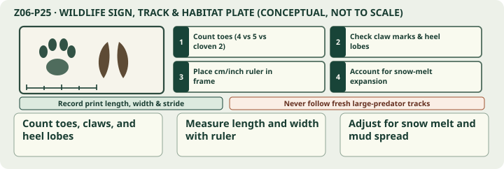

Z06-P25 · Hunting and fishing · New manuscript
Reading Mammal Tracks with Metric Scale and Substrate Limits
Measure mammal tracks accurately while accounting for snow melt, mud spread, and overlap distortion.
When it applies · Snow, wet sand, mudflats, and dusty trail ecological observation.
Equipment · Metric/inch ruler, camera, notebook.

Actions
- Count visible toe pads, claw marks, and heel-pad shape across several consecutive prints rather than relying on a single distorted track.[H16]
- Place a metric ruler beside clean tracks to record length and width, remembering that sun-melted snow and soft mud can enlarge prints significantly.[H16]
- Compare symmetrical four-toe oval canine tracks (claws usually showing, X-space between pads) against rounder asymmetrical feline tracks (claws usually retracted, three-lobed heel pad) and five-toed mustelid/procyonid prints.[H16]
Failure recognition · Mistaking a sun-melted domestic dog print for a wolf or mountain lion—or guessing species from one muddy smear—produces unreliable field reports.[H16]
Verify · Multiple clean prints are measured with a ruler alongside trail width and habitat context before proposing a candidate family.[H16]
Stop or change course · Stop trailing fresh tracks of large carnivores (bear, wolf, cougar) or entering private or hazardous ice areas.[H12, H13, H16]
Evidence and editorial notes
- H12 · Minnesota DNR · Living with Black Bears and Encounter Safety (Current web edition)
- Section: Black bear encounter avoidance and attractant control · Conditions: Campsites, fishing shores, and trails in bear range
Support: Store food, fish waste, and scented items securely; make calm noise in thick cover, back away slowly without running, and never approach cubs.
Limitations: Bear behavior varies with habituation and food stress; carry and know local bear-deterrent rules where appropriate. · Conflicting evidence: None noted.
Editorial note: Core Z06 wildlife encounter avoidance. · Specialist reviewer: Wildlife conflict specialist
Primary source · checked 2026-11-25
Current assessment · A04-H12 (2026-11-25) · Reopened: earlier closure narrowed (A04): Source supports managing attractants. The full behavior string spans encounters and may depend on species and behavior. Do not reuse as unconditional advice. Limits: Specialist review PENDING (Wildlife conflict specialist); publication HOLD. All release decisions pending. - H13 · Minnesota DNR · Gray Wolves in Minnesota: Safety and Legal Protection (Current web edition)
- Section: Gray wolf legal status and encounter guidance · Conditions: Northern Minnesota wolf range
Support: Gray wolves are legally protected in Minnesota under federal/state status; maintain distance, keep pets leashed, secure attractants, and report bold behavior to DNR.
Limitations: Never feed, approach, or attempt to harass protected predators; verify current legal status before any assumption. · Conflicting evidence: None noted.
Editorial note: Protects endangered/managed carnivores and bystanders. · Specialist reviewer: Wildlife biologist and legal reviewer
Primary source · checked 2026-11-25 - H16 · Minnesota DNR · Mammals of Minnesota Species and Sign Reference (Current web edition)
- Section: Mammal ecology, seasonal movement, and sign interpretation · Conditions: Reading wildlife tracks, scat, browse, and trail patterns
Support: Substrate moisture, snow crust, and animal gait distort track dimensions; combine multiple signs and habitat context rather than single prints.
Limitations: Never handle unknown scat barehanded due to parasite eggs (e.g., Baylisascaris); sign interpretation is ecological observation, not harvest authorization. · Conflicting evidence: None noted.
Editorial note: Grounds Z06 tracking in ecology and hygiene. · Specialist reviewer: Wildlife ecologist
Primary source · checked 2026-11-25
Source lineage · New manuscript (Z06 P17 track recognition) · Classification · New manuscript.